Modelos de Representação
ex.: BERT, RoBERTa
- Como funciona
- Atenção bidirecional: cada token enxerga a frase inteira e gera embeddings profundos.
- Usos
- Busca semântica, classificação, agrupamento.
- Limitação
- Não geram texto sequencial / conversacional.
Uma Jornada do Texto ao Transformer
Baseado nos Capítulos 1, 2 e 3 de “Hands-On Large Language Models”
←→ ou Espaço para navegar · F tela cheia
Sistemas computacionais dedicados a realizar tarefas próximas da inteligência humana, como reconhecimento de fala, tradução e percepção visual. É a inteligência do software, em oposição à dos humanos.
Subcampo da IA focado em tecnologias capazes de entender, processar e gerar linguagem humana. Muitas vezes usado como sinônimo de Processamento de Linguagem Natural (NLP).
Representado como zeros e uns (caracteres individuais), o texto perde o significado. Por isso, a história da Language AI busca representar a linguagem de forma estruturada para os computadores.
01010110 01010000 01001110
sem significado
Trechos traduzidos de Hands-On LLMs, Cap. 1 — “What Is Language AI?”
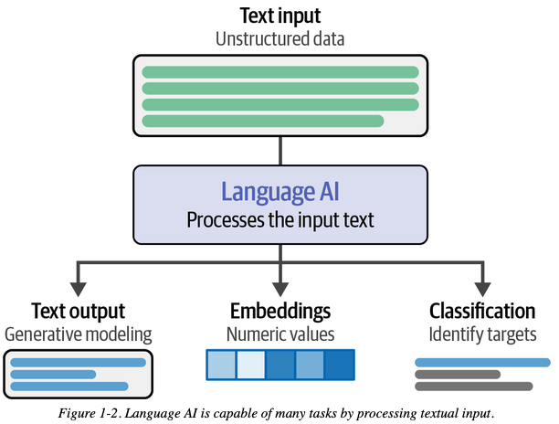
Contagem a frequência das palavras. Ignora a ordem.
Palavras viram vetores densos num espaço semântico. Embedding estático.
Leitura sequencial com contexto. Lenta, sem paralelização.
Treinamento em paralelo. - "Attenction Is All You Need".
BERT entende e classifica (bidirecional) - GPT gera texto (autoregressivo)
IA generativa chega ao grande público e a escala explode.
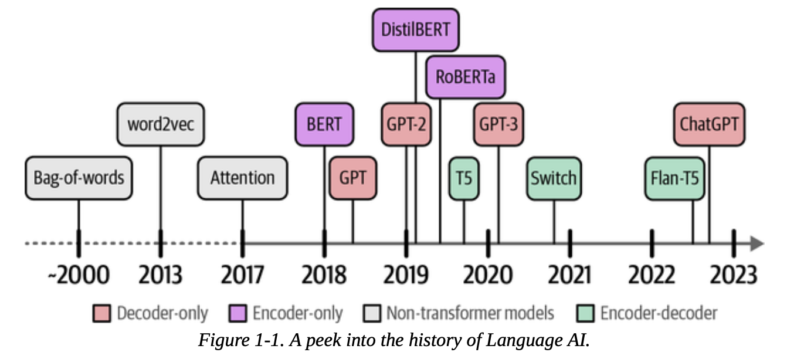
ex.: BERT, RoBERTa
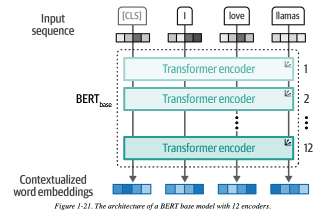
ex.: GPT, Llama
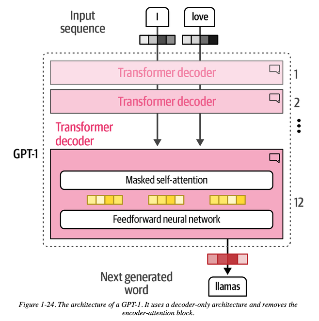
Computadores processam números, não palavras brutas.
Vocabulário enorme; palavras novas viram [UNK].
Sem desconhecidas, mas sequências longas e pouco significado.
BPE / WordPiece: o equilíbrio usado pelos LLMs.
Exemplo ilustrativo: as divisões e os IDs abaixo não são a saída de um tokenizer real.
“Minha VPN não conecta”
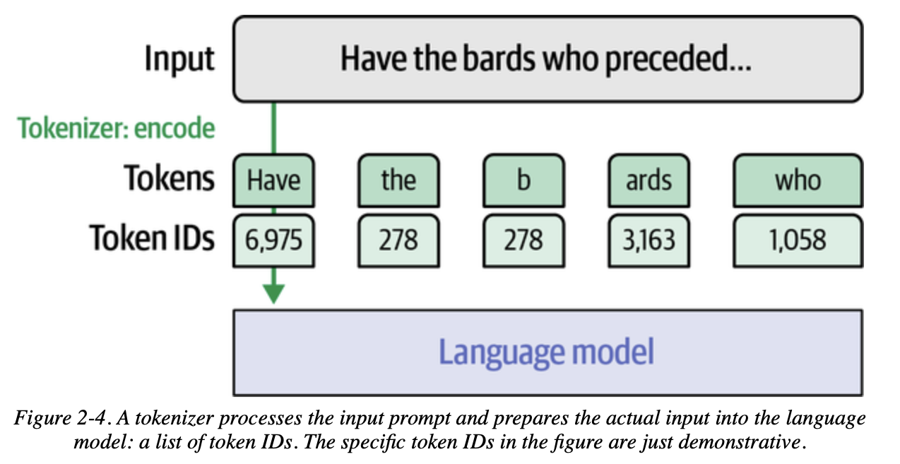
Representação numérica contínua (vetores densos) que captura o significado semântico de tokens, frases ou documentos.
[ 0.21, −0.53, 0.88, …, 0.07 ]
Um vetor fixo por palavra.
v sempre igual
O vetor muda conforme a frase.
v₁
v₂
Proximidade vetorial via similaridade de cosseno, indo além das palavras-chave exatas:
“célula 5G sobrecarregada” encontra “congestionamento na estação rádio-base” — sem nenhuma palavra em comum.
Já vimos tokenização e embeddings. Agora entramos no modelo de geração de texto, em três ideias.
Um LLM treinado é um sistema que recebe texto (o prompt) e devolve texto (a geração).
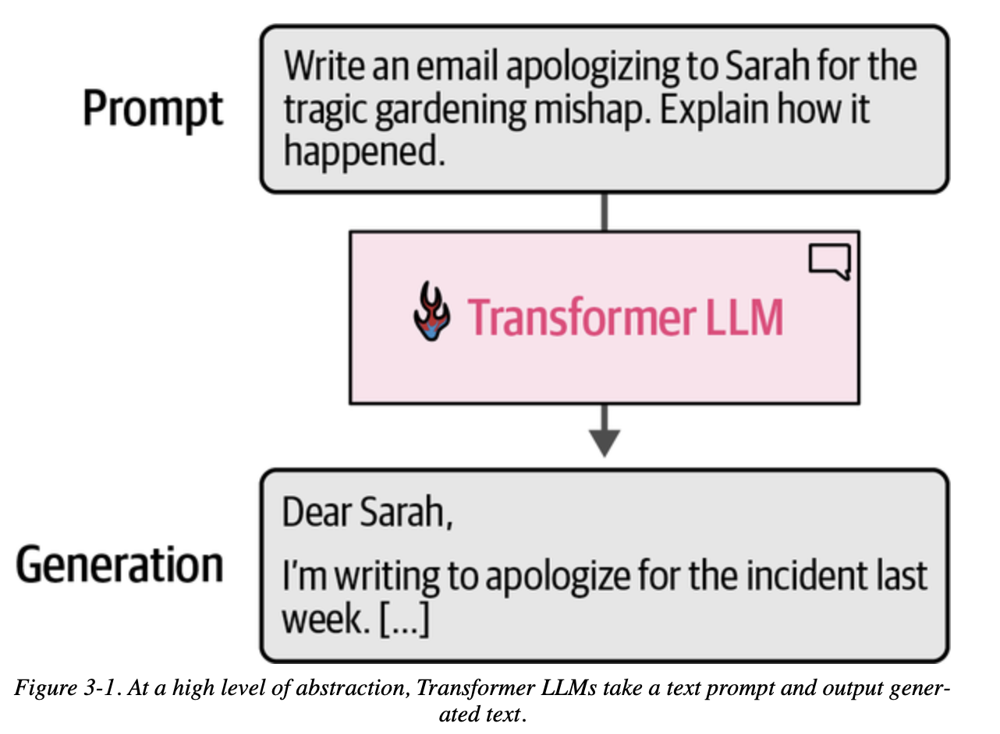
Ele não gera tudo de uma vez: cada token novo é um forward pass pela rede.
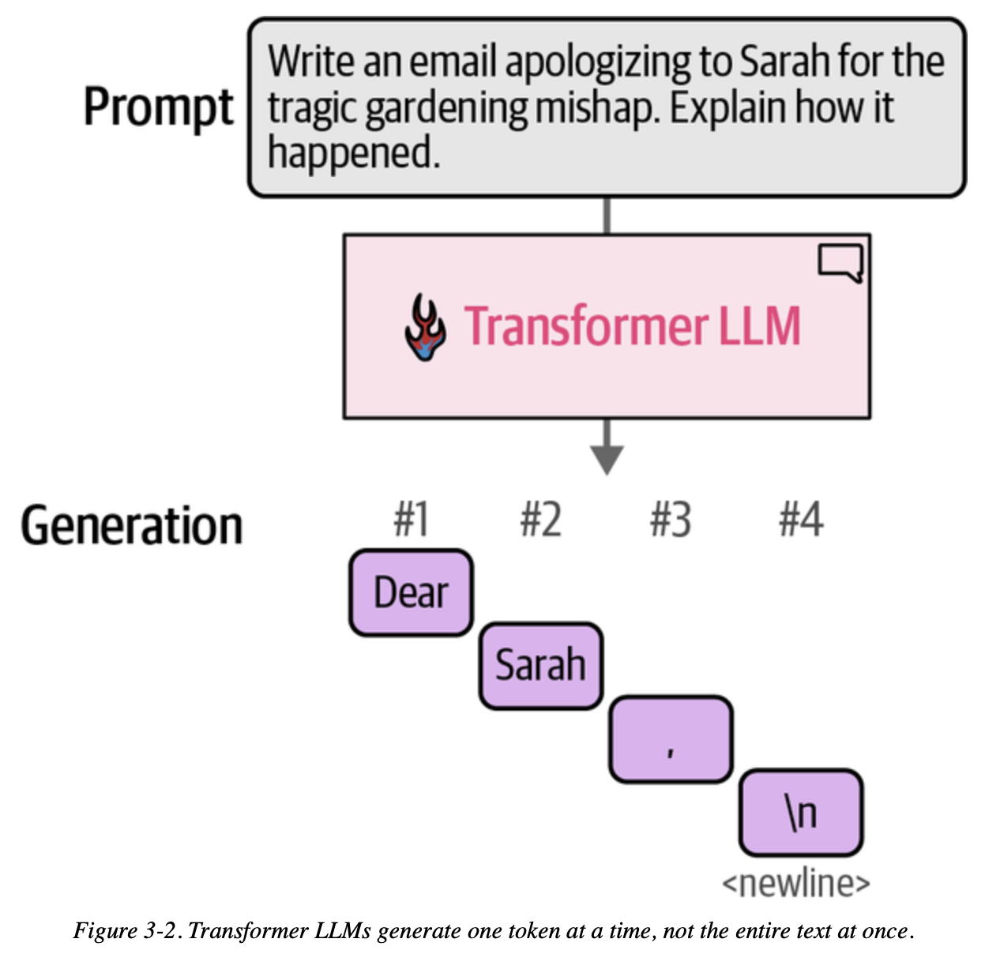
O token gerado é anexado ao prompt e o texto volta ao modelo. É um loop até terminar: por isso é autorregressivo, ao contrário do BERT.
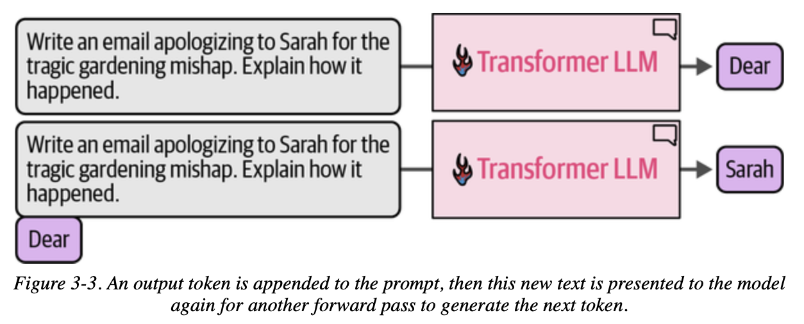
Além do loop, dois componentes internos são essenciais: o tokenizador e a LM head. Dentro do Transformer LLM, a ordem é esta:
Quebra o texto em uma sequência de IDs de tokens, que viram a entrada do modelo.
A rede neural: os blocos fazem todo o processamento, um após o outro.
Traduz a saída da pilha em pontuações de probabilidade para qual é o próximo token mais provável.
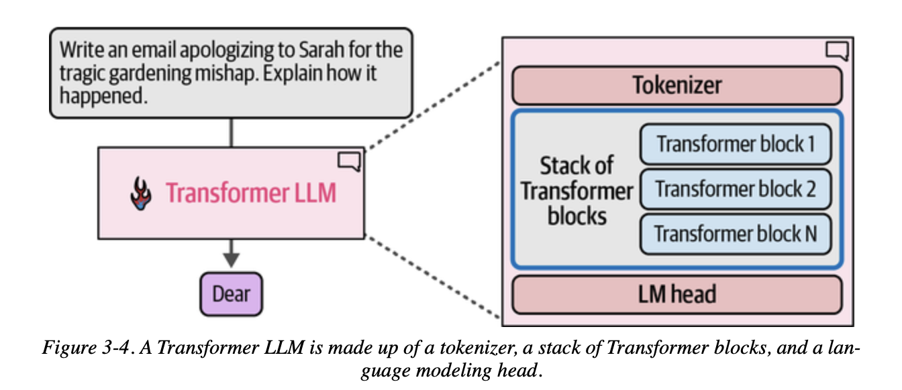
O tokenizador tem uma tabela de tokens: o seu vocabulário. O modelo guarda um vetor (embedding) para cada token dessa tabela. Ex.: um vocabulário de 50.000 tokens tem 50.000 embeddings.
Para cada token gerado, o processo passa uma vez por cada bloco da pilha, em ordem, e chega à LM head. Ela dá uma pontuação de probabilidade para cada token do vocabulário.
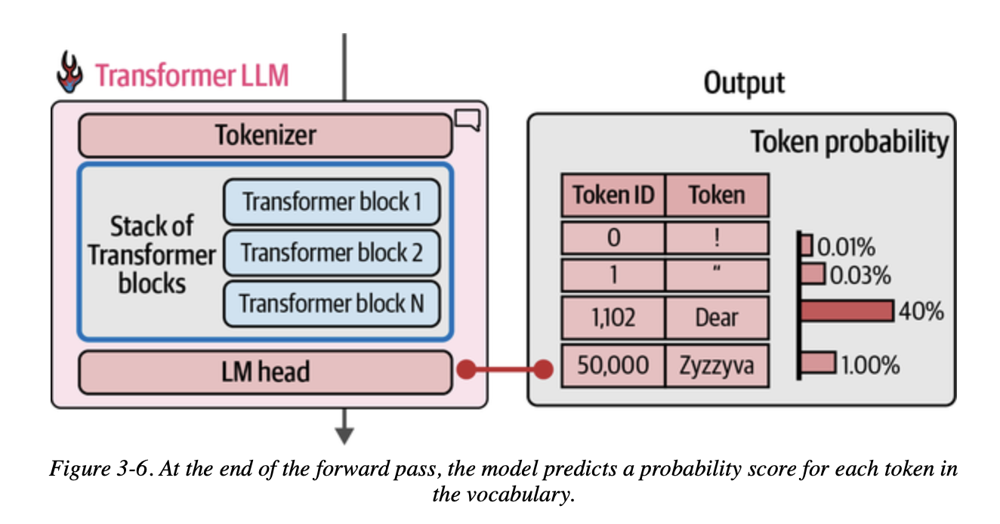
O método de escolher um token dessa distribuição é a estratégia de decodificação. No exemplo, ela leva ao token “Dear”.
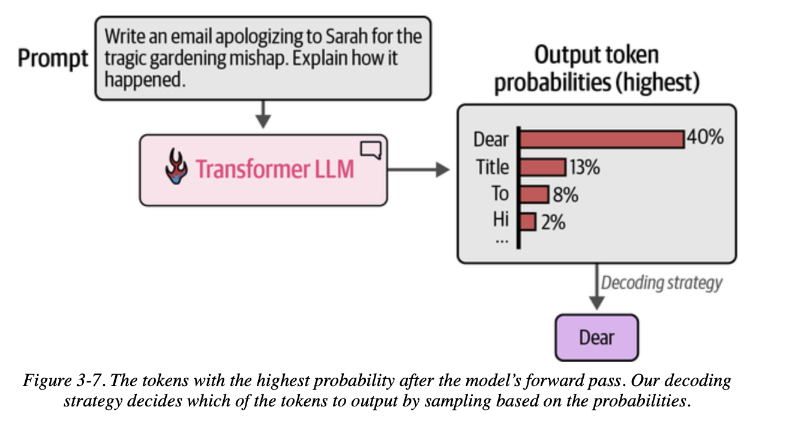
Sempre o token de maior probabilidade. É a estratégia mais simples, mas na prática raramente dá os melhores resultados.
Adiciona aleatoriedade: se “Dear” tem 40%, tem 40% de chance de ser escolhido, e os outros tokens também têm a sua chance.
Greedy equivale a temperature = 0 · a temperatura é tema do Capítulo 6.
Os Transformers se prestam melhor à computação paralela do que as arquiteturas anteriores. Cada token de entrada segue o seu próprio caminho de computação (stream).
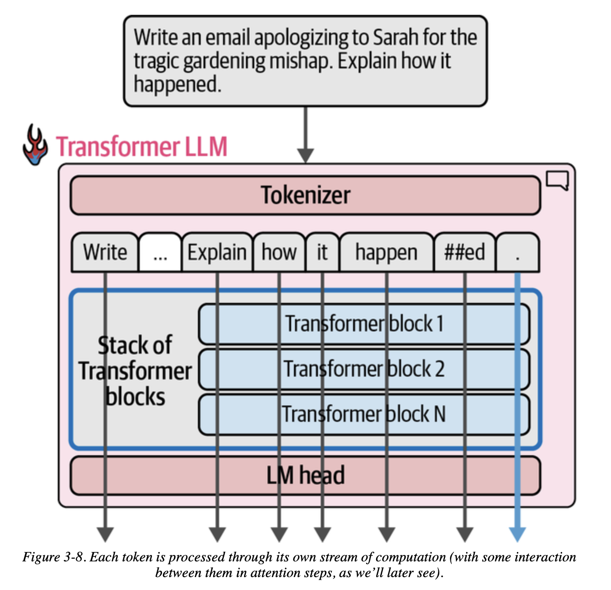
Cada fluxo começa com um vetor de entrada (o embedding mais informação de posição) e termina em outro vetor do mesmo tamanho: a dimensão do modelo.
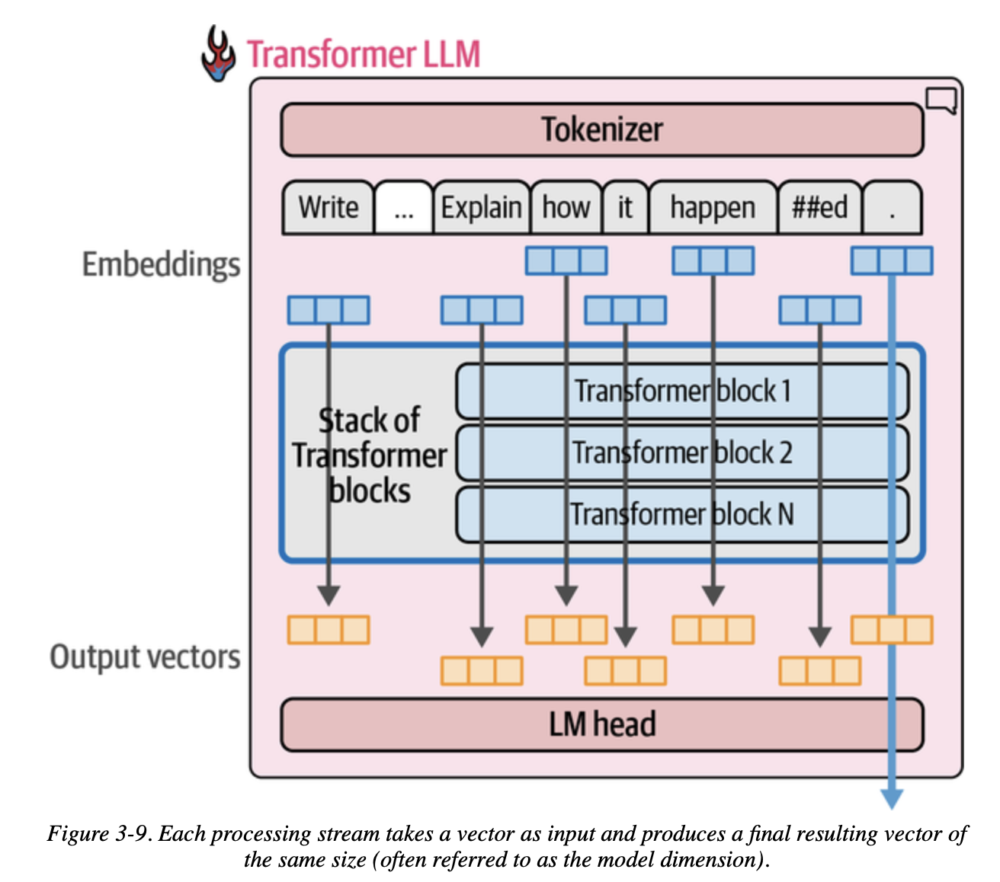
Limite de quantos tokens o modelo processa de uma vez. Com 4K de contexto, ele só tem 4K desses fluxos.
Na geração de texto, apenas o vetor de saída do último fluxo entra na LM head.
Então por que calcular todos? Porque os cálculos dos fluxos anteriores são necessários: suas saídas, em cada bloco, são usadas no mecanismo de atenção.
É nos blocos Transformer que acontece a grande maioria do processamento. Um LLM é uma série de blocos (de cerca de seis no artigo original a mais de cem em LLMs grandes): cada um processa a entrada e passa o resultado ao próximo.
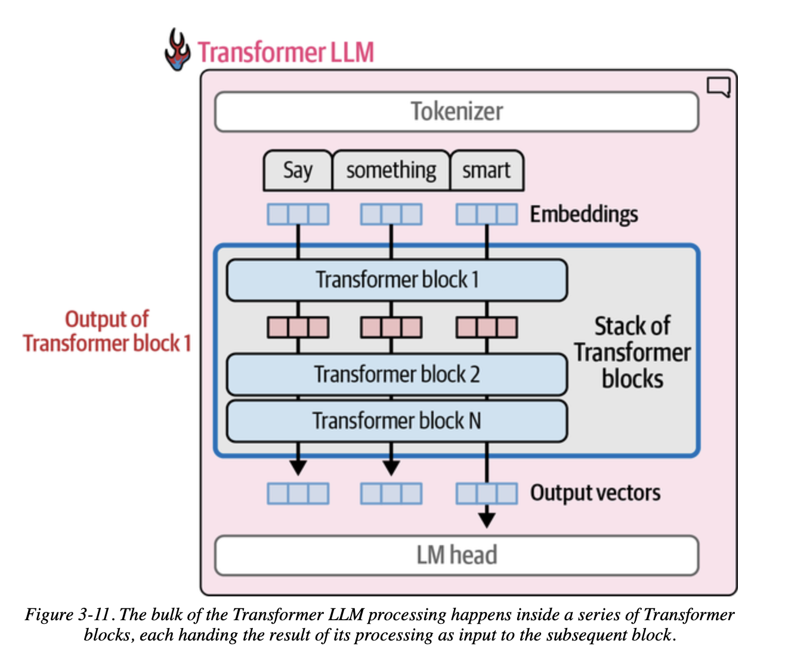
Cada bloco Transformer é feito de dois componentes sucessivos: uma camada de autoatenção seguida de uma rede neural feedforward.
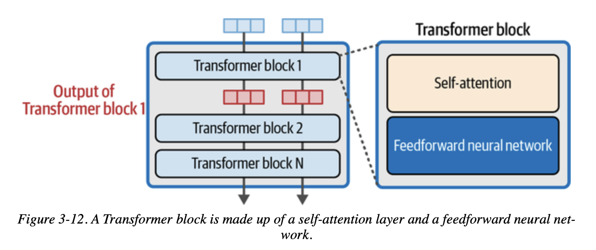
Se passamos “The Shawshank” a um modelo de linguagem, esperamos que ele gere “Redemption” como a próxima palavra mais provável (o filme de 1994).
A rede feedforward (em todas as camadas) é a fonte dessa informação: treinado em um enorme acervo de texto, o modelo aprendeu e armazenou o que o faz acertar.
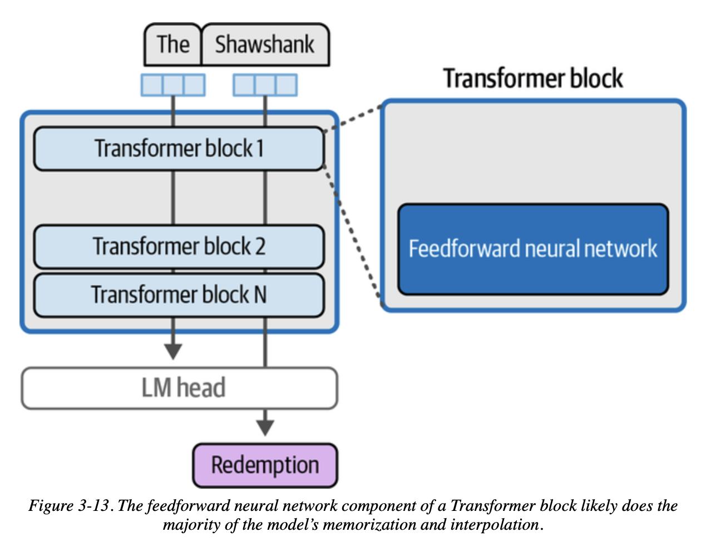
Um LLM precisa memorizar muita informação, mas a memorização é apenas um ingrediente. A mesma maquinaria interpola entre pontos de dados e padrões mais complexos e generaliza: vai bem em entradas que não estavam no treino.
Processa cada token individualmente, logo após a atenção, e é o repositório de conhecimento factual do modelo: onde a maior parte dos parâmetros vive.
Contexto é vital. Em “The dog chased the squirrel because it”, para prever o que vem depois de “it” o modelo precisa saber a quem ele se refere: ao cachorro ou ao esquilo? A atenção adiciona informação do contexto à representação de “it”.
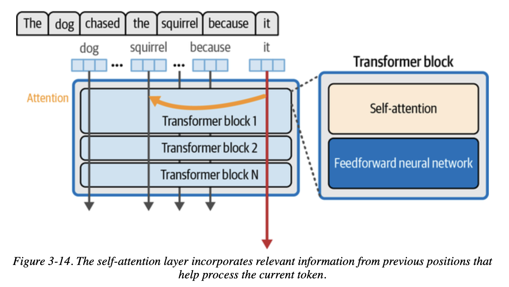
O mecanismo opera sobre o vetor de entrada da posição atual (a seta rosa) e incorpora informação relevante do contexto ao vetor que produz como saída. Isso se baseia nos padrões aprendidos no treinamento.
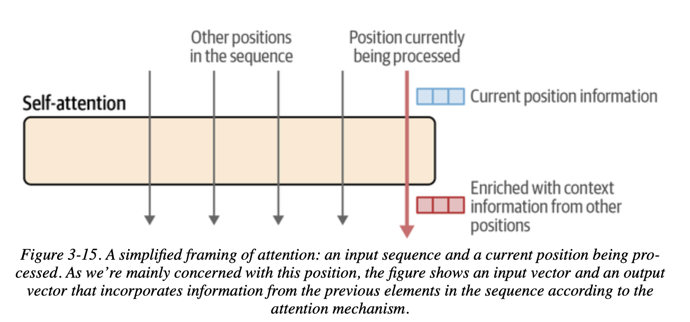
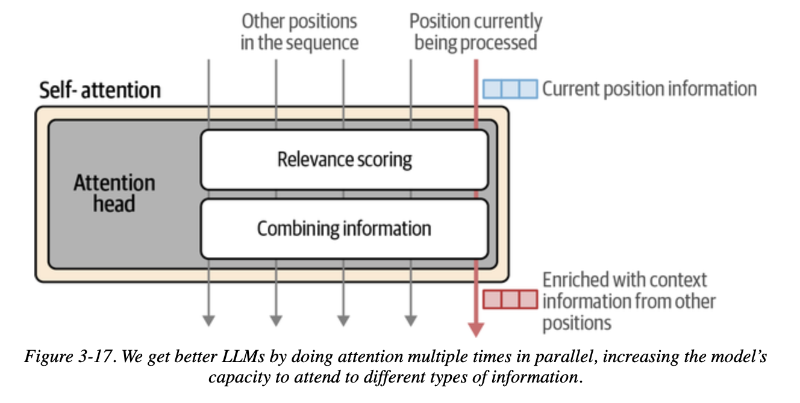
O modelo calcula a relevância entre todos os tokens da frase simultaneamente:
Passe o mouse (ou toque) em uma palavra para ver para onde ela “olha”:
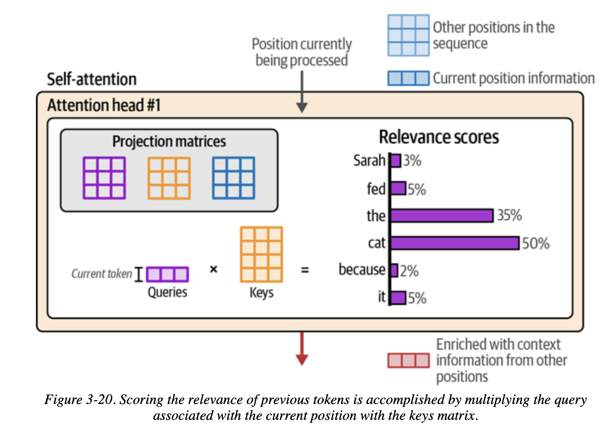
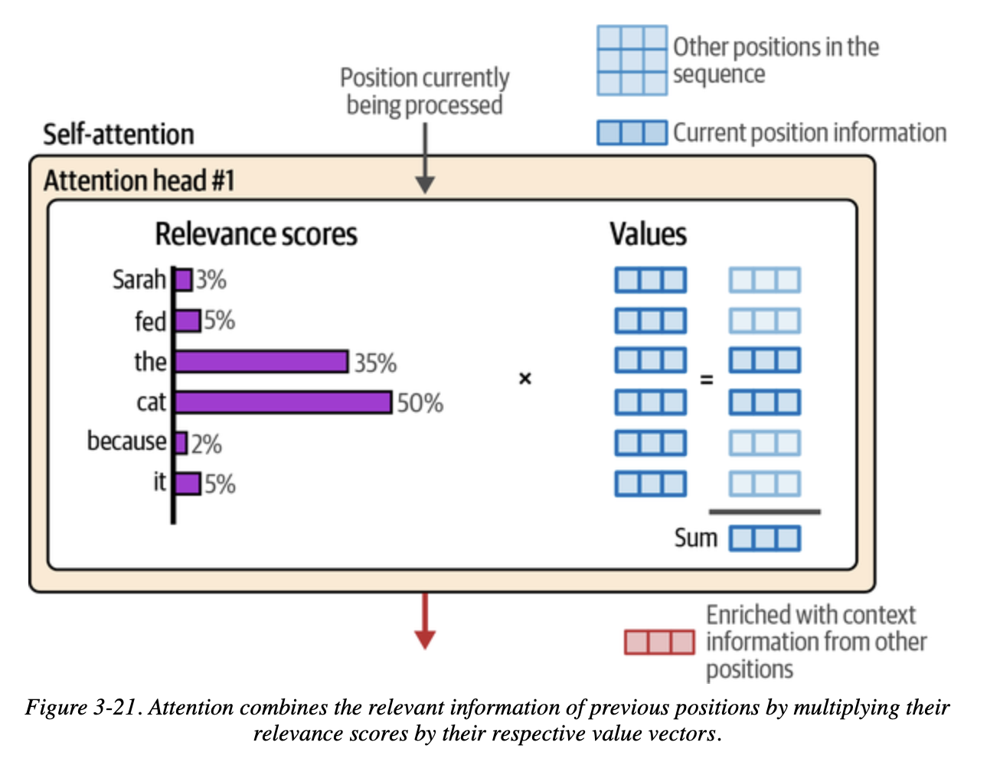
Guarda as Keys e Values dos tokens anteriores: a cada passo, só o token novo é calculado.
Grupos de cabeças de Query compartilham as mesmas cabeças de K e V → menos VRAM. Usado no Llama 3.
O KV Cache cresce linearmente com o tamanho do contexto (e do batch).
Atenção tradicional tem custo O(N2) em sequências longas: